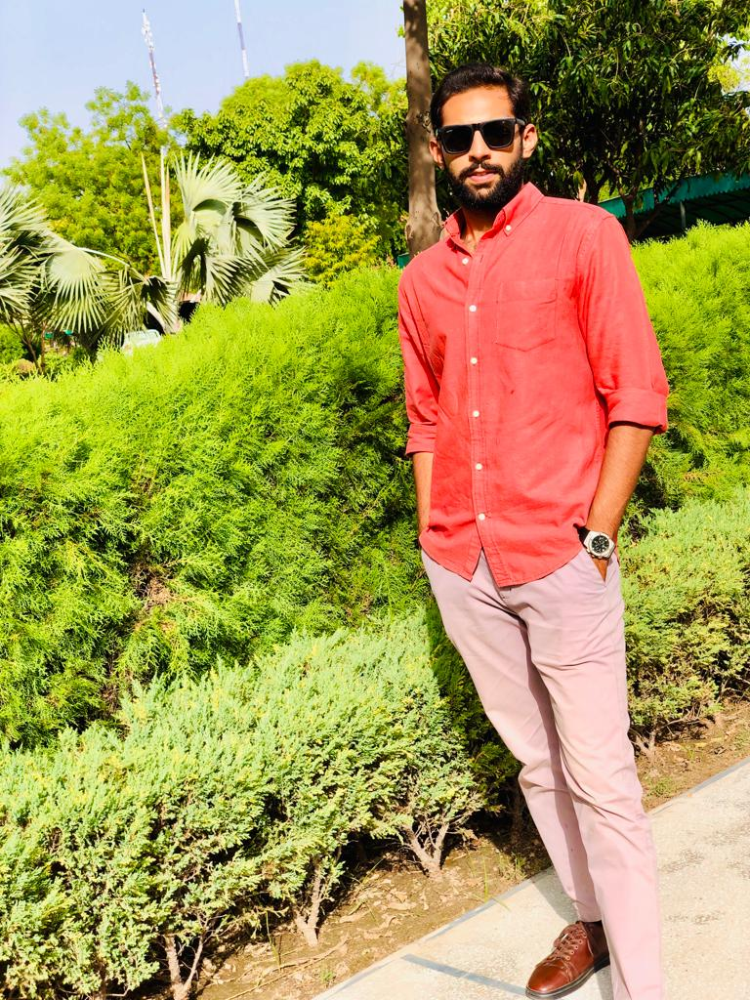

Saad Umar
Contact
Address:
161 A2 Sector A Enginners Town Lahore.
Phone:
03234766364
Email:
saadumar2000@hotmail.com
Languages
- C++
- Java
- MySql
- JavaScript
- Html/Css
Hobbies
- Car Modifications/tuning
- Car Detailing
- Badminton
- Movies
Summary
- An innovative thinker, initiative taker and multi dimensional professional with exceptional logical and analytical skills, a fresh graduate as a computer science engineer.
- Experience in designing, developing, implementing and testing computer-based hardware and software.
- Expert in dealing with components that are found inside computer equipment, as well as the actual devices that contain the computers and the software that runs on those machines.
- Proficient in design networks that connect computer systems.
- Expert in working on integrating software programs with computer hardware.
Skill Highlights
- Design and integration problem solving skills.
- Strong written and verbal communications.
- Good analytical & logical thinking
- Project Management
- Ability to work under pressure.
Experience
Abaska Tech: (2017 - 2019)
- Used computer languages such as C++, JAVA to develop projects.
- Assistance to the technical Head for the projects.
- Designing new programs as per the requirements.
- Solving technical issues of the departments.
Dev Factori: (2021 June - 2021 Sep0
- Member of the final technical escalation team for web hosting data centre network events.
- Train the new interns about the systems & software languages used in the organization.
- Responsible for resolving issues that affect any customers' web site functionality.
- Handled the various responsibilities in the absence of the Director of Networking
Education
- Bachelours In Computer Sciences From COMSATS University Lahore. (2020-2024)
- F.Sc From FORMAN CHRISTIAN COLLEGE (2017-2019)
Certifications
- Indulge in the coding of the unique software of security which was developed at ABD Company.
- Give many speeches and take an active participation in various software development program.
- Receive many awards abd appreciations in the company.